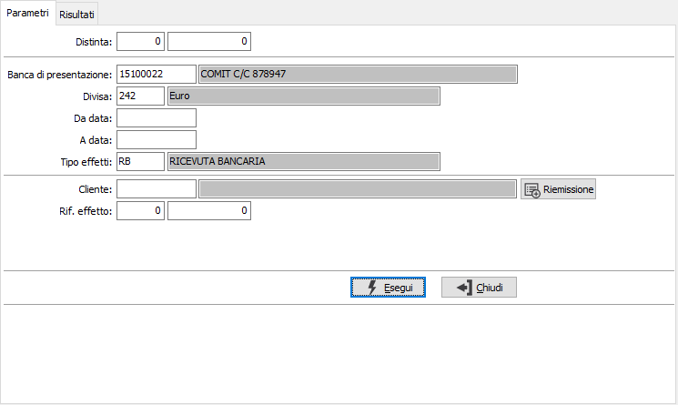
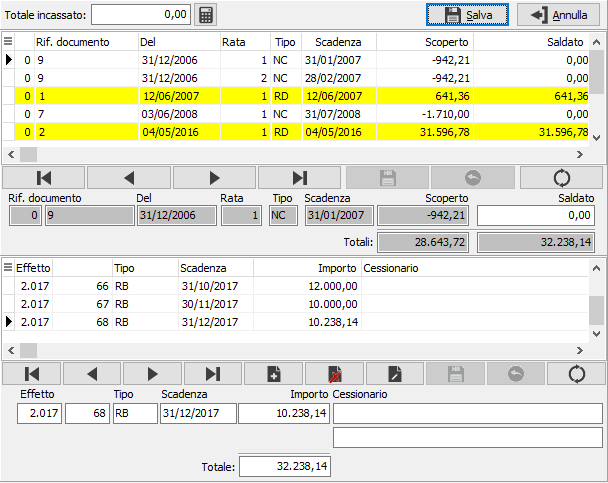
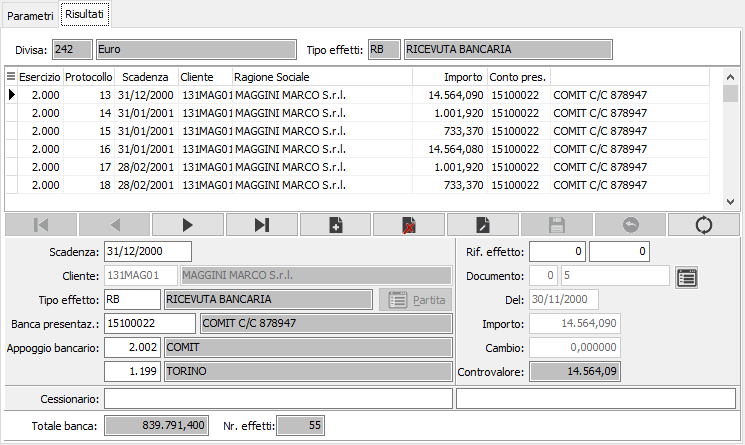
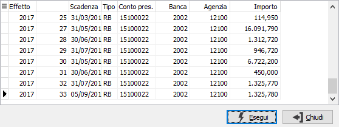
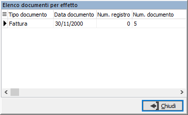

Il pulsante Dettaglio consente di visualizzare l'elenco
delle fatture assegnate all'effetto.
Il pulsante Dettaglio consente di visualizzare l'elenco
delle fatture assegnate all'effetto.Manutenzione distinta
Il programma consente, dopo la generazione di una distinta effetti ma prima della stampa definitiva della stessa, di intervenire per eventuali modifiche. È possibile visualizzare anche distinte già stampate in definitiva, ma solo per consultazione e ristampa.

Fra i parametri che vengono richiesti compaiono anche l'anno ed il numero della distinta, che è possibile utilizzare, per richiamare una distinta, solo dopo avere effettuato la stampa definitivi della distinta stessa.
BANCA DI PRESENTAZIONE: codice alfanumerico di 8 caratteri, presente nella tabella Conti correnti, per indicare la banca di presentazione della distinta. Sul campo è attiva la viste F9 sulla tabella stessa.
DIVISA: codice alfanumerico di 3 caratteri, presente nella tabella Divise, per indicare la divisa degli effetti che si vogliono selezionare. Sul campo è attiva la ricerca (F9) sulla tabella stessa.
DA DATA: indicare la data di scadenza da cui si intende iniziare la selezione degli effetti. Confermando a vuoto la stampa inizia dal primo effetto valido per l'esercizio corrente.
A DATA: indicare la data scadenza con cui si intende terminare la selezione degli effetti. Confermando a vuoto la stampa termina con l'ultimo effetto valido.
TIPO EFFETTO: definisce il tipo di effetto da selezionare. Sul campo è attiva la funzione di ricerca (F9).
Il pulsante Riemissione, presente se attivo l'apposito parametro in Configurazione partite aperte, consente di selezionare le scadenze del cliente indicato, che diventa campo obbligatorio, per effettuare l'emissione di effetti selezionando le partite aperte del cliente, analogamente all'operazione di incasso con effetti che si può effettuare dalla prima nota contabile; le operazioni vengono effettuate all'interno della finestra mostrata ed al salvataggio gli effetti vengono inclusi nella pagina Risultati della manutenzione distinta.

La sezione dei risultati mostra gli effetti facenti parte della distinta e ne consente la modifica, eccetto in caso di distinta stampata in definitiva.

Se è stata ricercata una distinta definitiva è presente in alto accanto al tipo effetti un pulsante tramite il quale è possibile ricercare un determinato effetto nella distinta e posizionarsi sul rigo relativo. Il pulsante Stampa consente di ristampare la distinta ed è attivo solo nel caso di distinta già stampata in definitiva. Sul campo riferimento effetto premendo il tasto F11, vengono ricercati ed elencati gli effetti associabili ed è possibile selezionare, tramite la finestra di ricerca, un effetto da associare a quello corrente.

Il pulsante Dettaglio consente di visualizzare l'elenco
delle fatture assegnate all'effetto.

Un cenno particolare merita la gestione di effetti manuali.
Difatti per tutti gli utenti che dispongono del modulo Vendite ma non dispongono oppure non utilizzano il modulo Contabilità è possibile inserire in questa fase eventuali effetti derivanti non dall’emissione di una fattura ma ad esempio dal ricevimento di portafoglio a fronte di insoluti.
Questa opzione viene abilitata se il valore del campo “Tipo quadratura” nella configurazione partite è stato impostato a “Controllo non vincolante” oppure “Nessun controllo”.
Premendo sul bottone “Nuovo” della barra di navigazione viene effettuata la domanda “Vuoi inserire manualmente un nuovo effetto ?’. Rispondendo affermativamente alla domanda il programma permette di inserire tutti gli estremi dell’effetto e del documento (normalmente all’interno della maschera è possibile manutenere soltanto alcune informazioni come banca, scadenza oppure tipo effetto). Inseriti tutti i dati necessari per la successiva gestione operativa dell’effetto è possibile in questa fase assegnare l’effetto ad una partita esistente. Tale operazione si effettua cliccando sul bottone “Partita”. Alla pressione di questo bottone si abilita una maschera in cui è possibile selezionare la partita a cui associare l’effetto che si sta registrando. All’atto della registrazione i nuovi effetti vengono inseriti nell’archivio scadenze per cui oltre a stampare la distinta effetti è comunque possibile ottenere la stampa di questi effetti all’interno dello scadenzario e della gestione flussi finanziari. Gli effetti inseriti manualmente possono essere comunque cancellati sempre attraverso la manutenzione distinta (a patto che non siano stati stampati in distinta).
Per la registrazione di insoluti manuali si rinvia all’apposito paragrafo all’interno del programma di manutenzione scadenze.